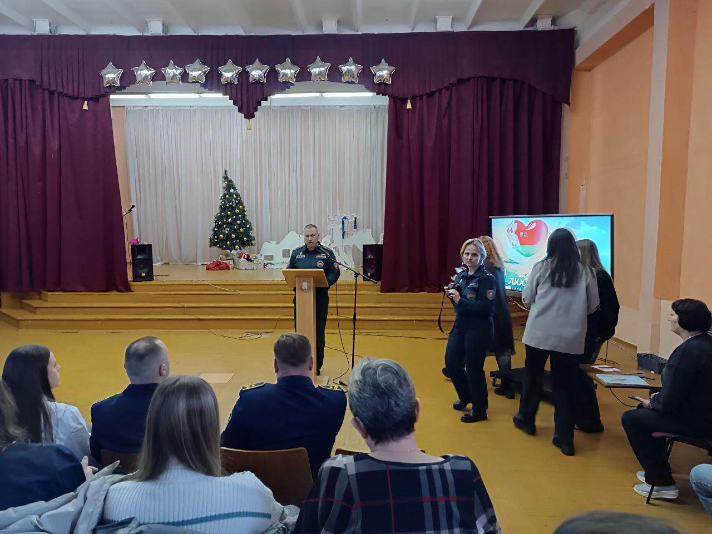
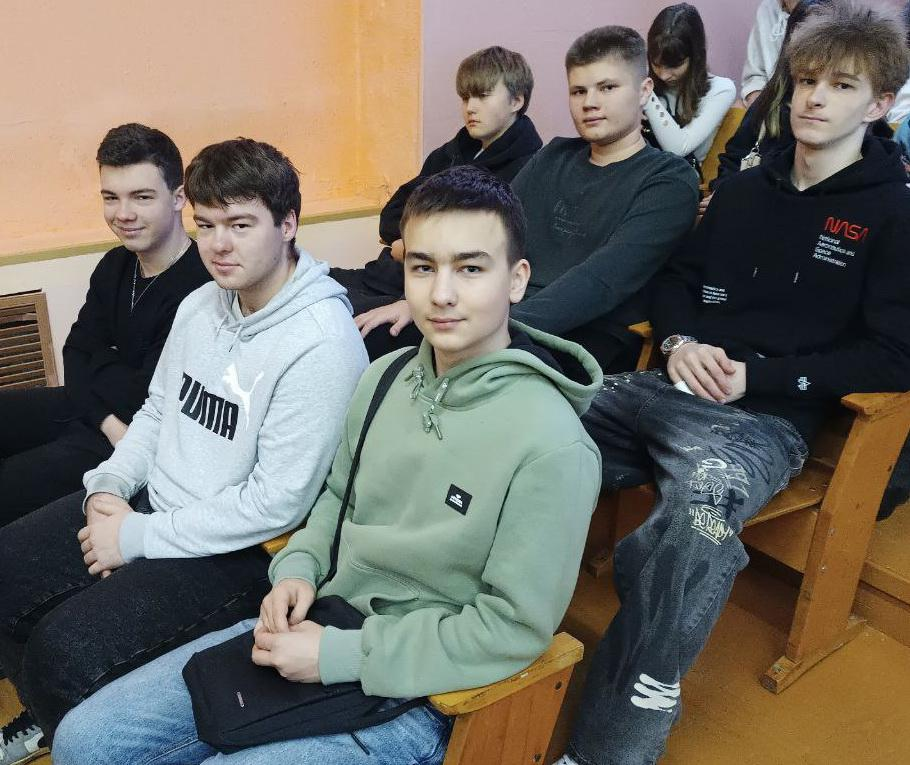
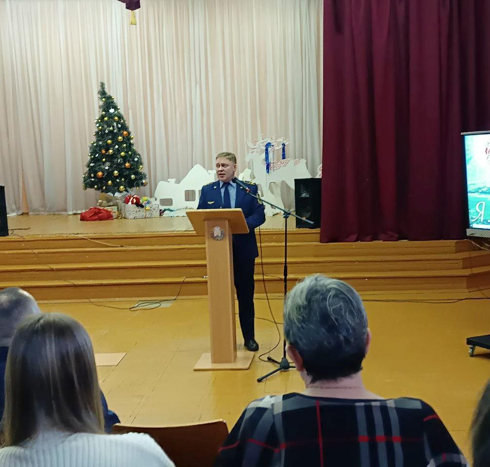
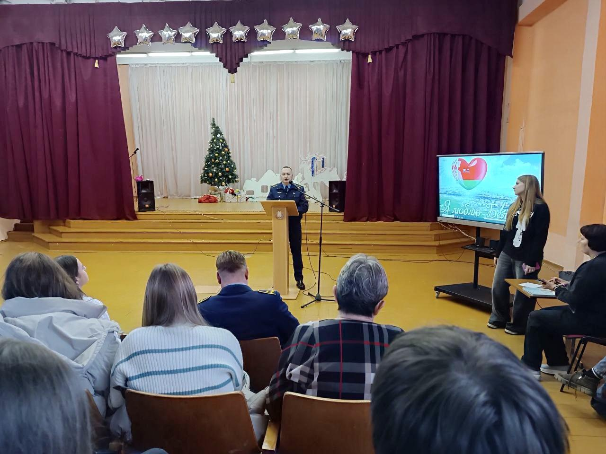
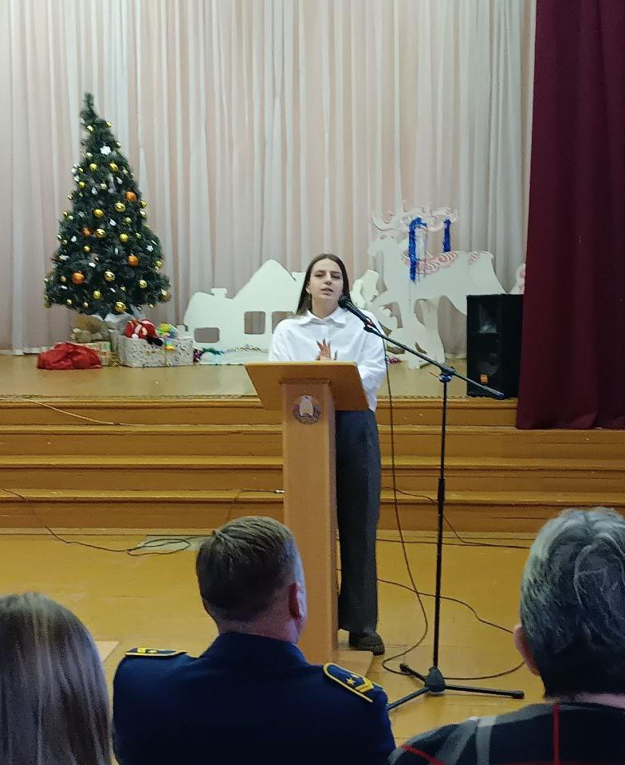
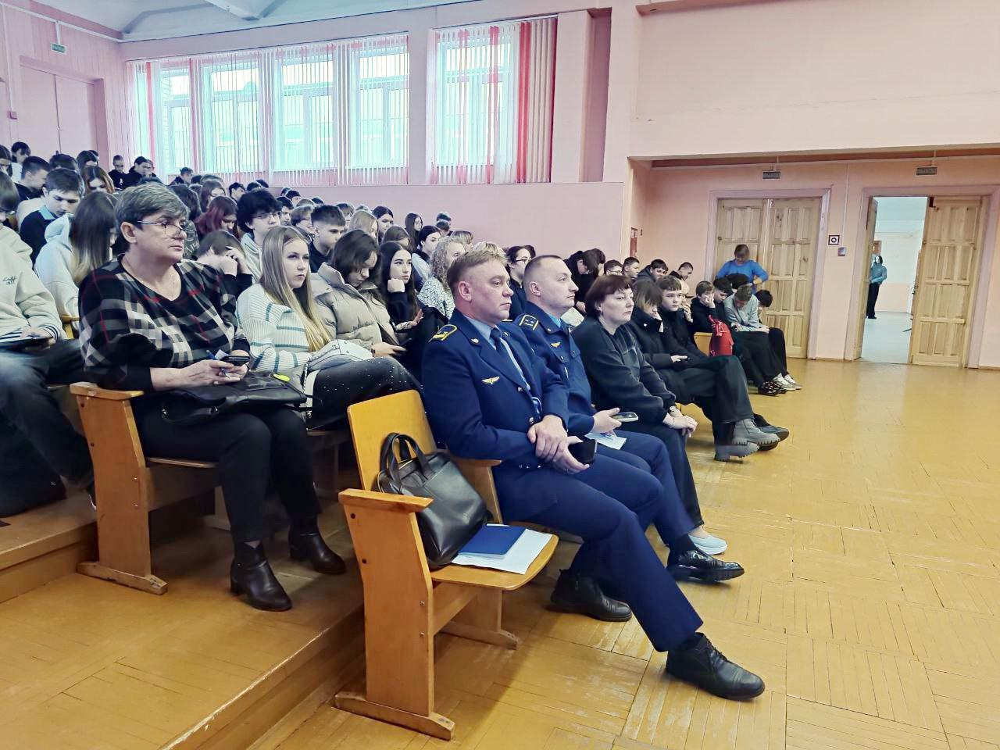

ПРОФОРИЕНТАЦИОННАЯ ВСТРЕЧА С ПРЕДСТАВИТЕЛЯМИ МЧС И УЧЕБНЫХ ЗАВЕДЕНИЙ, ОСУЩЕСТВЛЯЮЩИХ ПОДГОТОВКУ ПО ЖЕЛЕЗНОДОРОЖНЫМ СПЕЦИАЛЬНОСТЯМ
20 декабря учащиеся 10-11-х классов Государственного учреждения образования «Гимназия №1 г. Борисова» стали участниками профориентационного мероприятия с участием представителей МЧС и учебных заведений, осуществляющих подготовку специалистов по железнодорожные специальностям.


Заместитель начальника отдела Борисовского ГРОЧС подполковник внутренней службы Александр Аврамчик рассказал ребятам о профессии спасателя, особенностях поступления и обучения в Университете гражданской защиты МЧС Республики Беларусь. Не остались без внимания и вопросы, касающиеся повседневной жизни курсантов университета и перспектив дальнейшей службы в органах и подразделениях МЧС.


О железнодорожных специальностях ребята узнали от заместителя начальника Борисовской дистанции пути УП «Минское отделение БЖД» и представителей учреждений образования «Минский государственный профессиональный колледж железнодорожного транспорта им. Юшкевича» и «Белорусский государственный университет транспорта».

